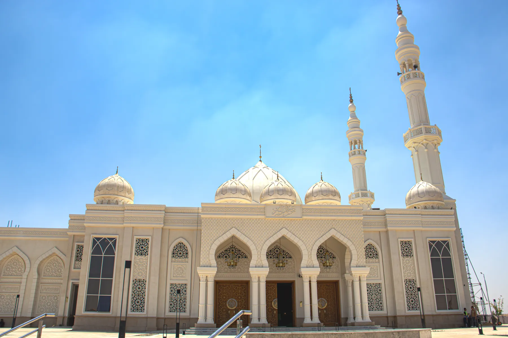
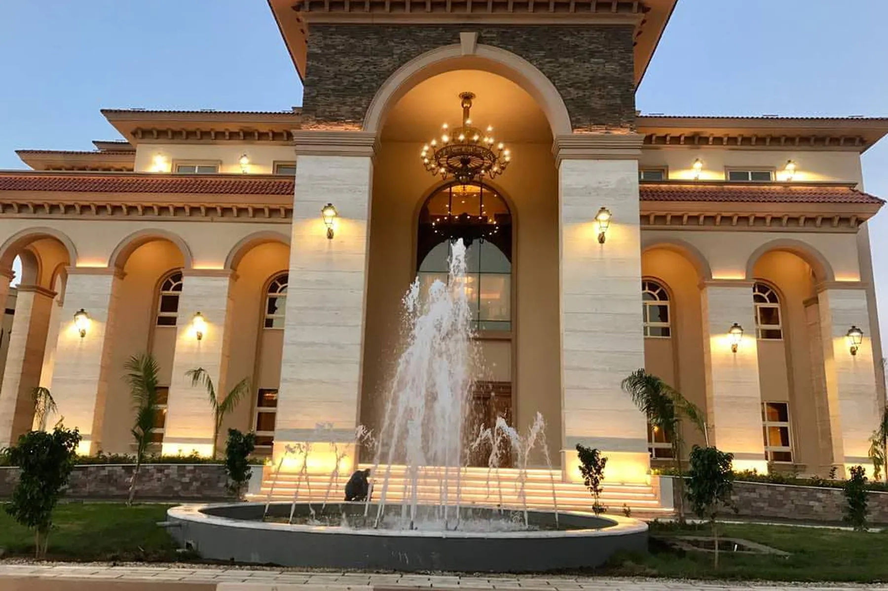
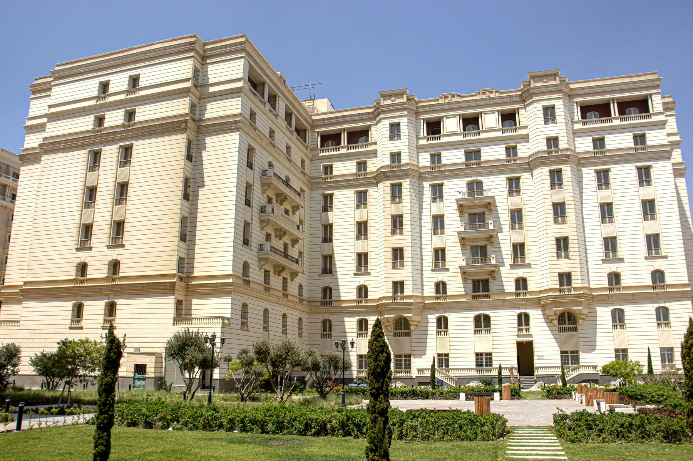
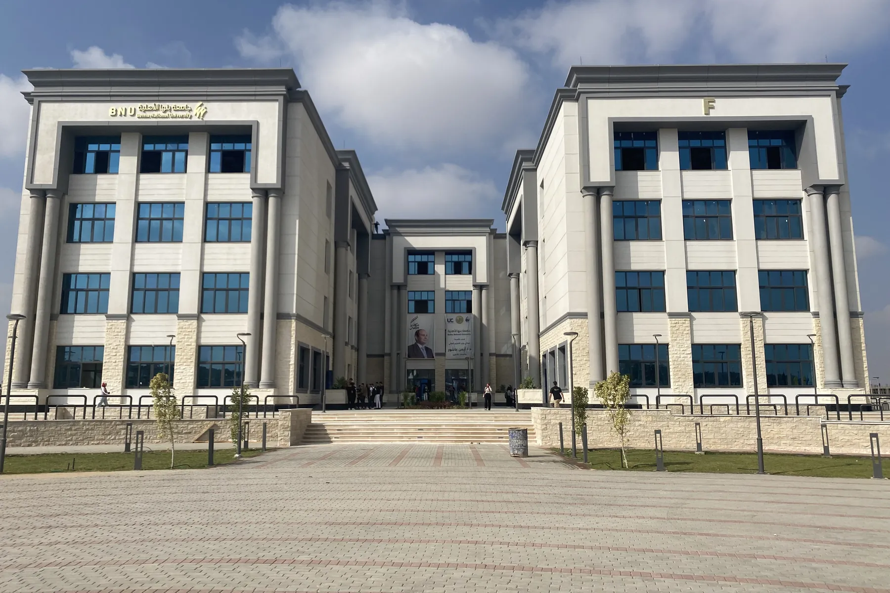
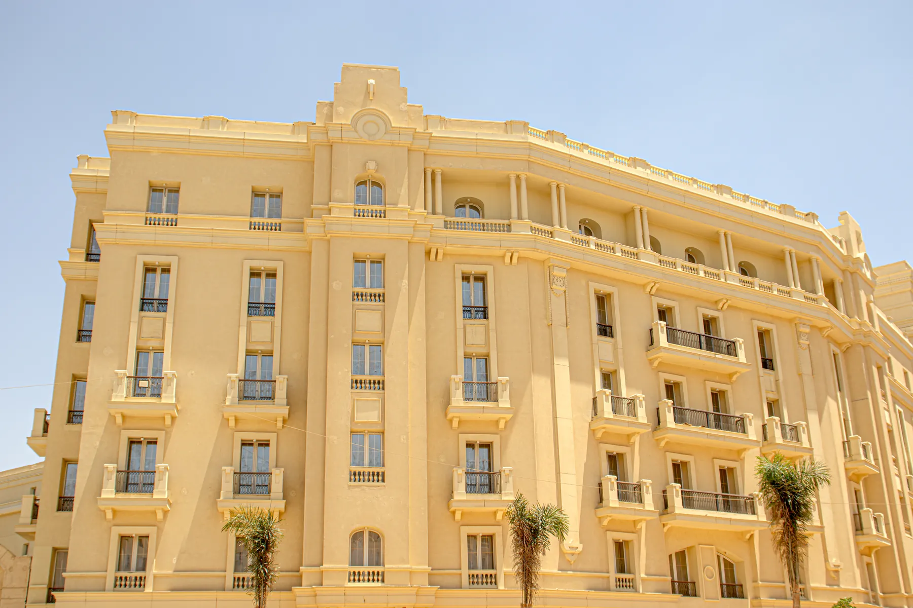
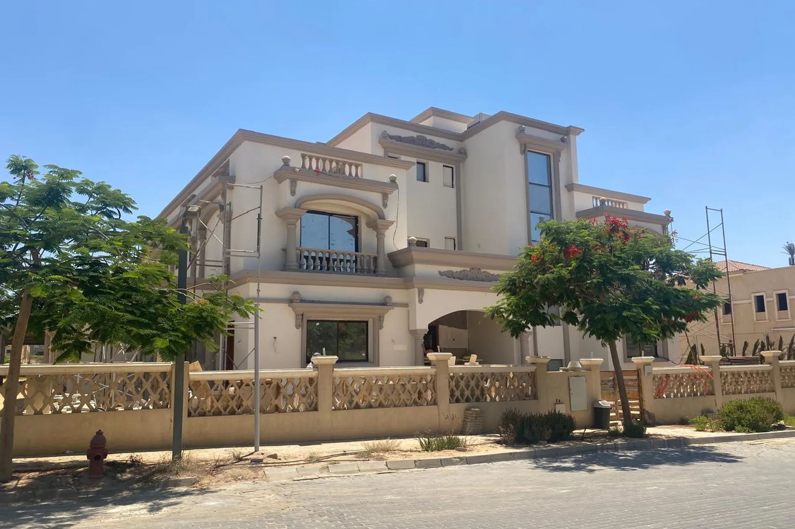

Materials Become Meaningful When They Become Architecture.
Eleven built projects — mosques, a state palace, a metro station, a hospital, campuses, banks, residences and a riverside restaurant — delivered with Deko Egypt.
01 — Selected Work
Eleven projects.
 Commercial — Façade
Arab African Bank
02
Commercial — Façade
Arab African Bank
02
 Healthcare — Façade
Suez Hospital
03
Healthcare — Façade
Suez Hospital
03
 Cultural — Façade & Interior
Al Aly Al Azaeem Mosque
04
Cultural — Façade & Interior
Al Aly Al Azaeem Mosque
04
 Public Infrastructure — Façade
Hadayek October Metro Station
05
Public Infrastructure — Façade
Hadayek October Metro Station
05

Cultural — Façade El Mo'oz Mosque 06 Hospitality — Façade & Interior
World Taste Restaurant
07
Hospitality — Façade & Interior
World Taste Restaurant
07

Cultural — Façade Al-Diyafah Palace 08
Residential — Façade Al Marasem 09
Education — Façade Banha University 10
Commercial — Façade Medicom 11
Residential — Façade Palm Hills VillaProject descriptions on this page are written from the project photography and describe the visible architectural work. Where a city is not yet confirmed the country is shown instead — see the note in the page source for the records still awaiting a confirmed location.

Your Project
Discuss a similar project.
Send the elevation, the interior or the element you are working on, and the stage the project is at. We will come back with a material route and a sampling plan.